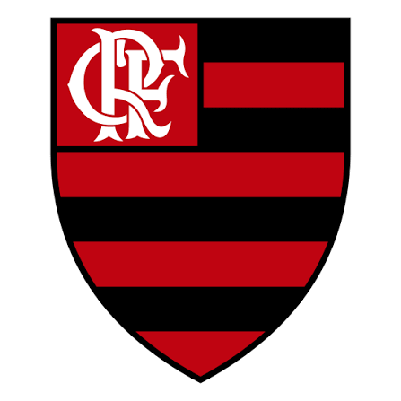
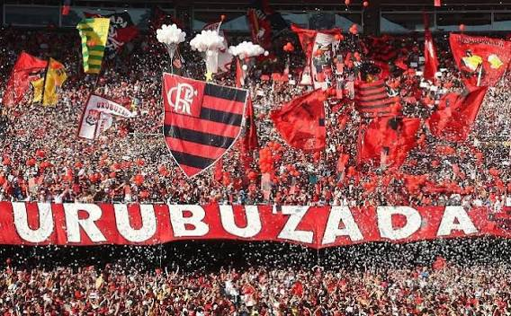

História do Flamengo
O Clube de Regatas do Flamengo foi fundado em 15 de novembro de 1895, na cidade do Rio de Janeiro, inicialmente como um clube de remo.
Com o passar dos anos, o futebol ganhou espaço no clube, que se tornou conhecido por suas conquistas e pela força de sua torcida.
As cores rubro-negras
O vermelho e o preto são as cores tradicionais do Flamengo e representam a identidade do clube.
Principais títulos
O Flamengo conquistou competições importantes ao longo de sua história. Entre elas estão:
- Copa Libertadores:
- 1981
- 2019
- 2022
- 2025
- Mundial Interclubes de 1981.
- Campeonato Brasileiro:
- 1980
- 1982
- 1983
- 1992
- 2009
- 2019
- 2020
- 2025
- Copa do Brasil:
- 1990
- 2006
- 2013
- 2022
- 2024
Essas conquistas fazem parte da trajetória esportiva do clube e são lembradas por torcedores de diferentes gerações.
A Nação Rubro-Negra
A torcida do Flamengo é conhecida como Nação Rubro-Negra. Seus torcedores demonstram apoio por meio de cantos, bandeiras e festas nas arquibancadas.
Para muitos torcedores, acompanhar o Flamengo é uma paixão que passa de geração em geração.
O Maracanã
Localizado no Rio de Janeiro, o Maracanã é um dos estádios mais conhecidos do Brasil e recebe partidas importantes do Flamengo.
O estádio faz parte de momentos marcantes da história do futebol brasileiro.
Curiosidades sobre o Flamengo
- O clube foi fundado em 1895.
- Sua origem está ligada ao remo.
- Suas cores tradicionais são vermelho e preto.
- O urubu é seu mascote mais conhecido.
- O clube possui títulos estaduais, nacionais e internacionais.
Imagens do Flamengo


Faça seu cadastro
Quer participar do nosso projeto sobre o Flamengo? Acesse a página de cadastro e preencha suas informações.